The Sunshine Committee was assembled in early 2016 as a team to work on our first project, Heist Night, following its successful run at the MassDiGI Game Pitch Challenge that February.
We enjoy working on novel concepts that bring people together in new ways, and hope to shine a ray of sunshine into your home through our brand of digital entertainment.
Tom Farro

Tom went to school for Robotics Engineering, but soon found that he preferred making games rather than machines.
Kelly Zhang

Kelly loves coffee, cheese, and fluffy things. Her spirit animal is Gudetama.
In addition to these two mainstays, the team occasionally includes some of our friends in on-and-off contract roles when the need arises.